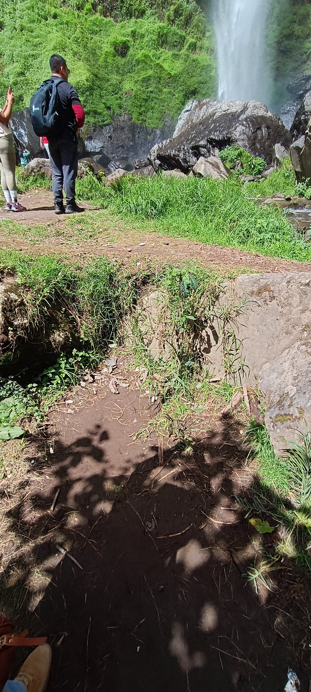
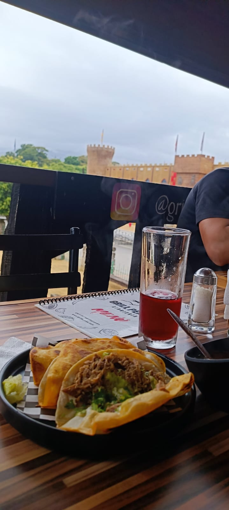

Algunos proyectos comienzan con una gran idea. Este comenzó con un viaje. Primero llegamos a Alpatláhuac para desayunar. Hasta ese momento todavía no sabía quién eras. Después visitamos la cascada. Después de una pequeña sesión de fotos, fui a sentarme bajo un árbol junto con el resto del grupo. Fue ahí donde, por primera vez, coincidimos en una conversación. Poco después apareció un perrito juguetón que decidió jugar contigo. El juego terminó dejando un recuerdo bastante evidente: un brazo completamente arañado. Más tarde fuimos a Casa Vega, donde comimos todos juntos. Recuerdo un pequeño detalle que en ese momento pasó completamente desapercibido. Nos preguntamos la edad y comentaste que acababas de cumplir 31 años. Habían pasado apenas unos días desde tu cumpleaños. Qué curioso resulta pensarlo ahora... Hace un año solo era una conversación más durante la comida. Hoy, este proyecto existe precisamente para celebrar tu cumpleaños número 32. Después de comer recorrimos Casa Vega. Entre fotografías y el recorrido llegamos al tobogán. Decidimos subirnos. Como éramos cinco personas, inevitablemente uno tenía que subir solo. Ese fuiste tú. Yo incluso quería volver a intentarlo, pero nadie más quiso subir otra vez. Mientras seguíamos caminando recuerdo que me contaste sobre el accidente que habías tenido con tu camioneta. Desde entonces todavía le tenías cierto respeto a la velocidad. Fue una conversación sencilla. De esas que normalmente uno olvida. Curiosamente... esa no. Más tarde llegamos a Orizaba. El teleférico no pudo funcionar por la lluvia. Compramos bombones. Caminamos por el centro. En el parque había personas bailando. Ninguno de nosotros se animó a salir. En ese momento no sabíamos bailar. Meses después... ese detalle también cambiaría. En ese momento solo era el recuerdo de un viaje muy divertido. Con el tiempo descubrí que, sin querer, también había sido el primer commit de este proyecto.
">


Así fue la primera vez que te vi.
Sin saberlo, esta fue la primera foto del primer commit.

Curiosamente... solo apareció tu brazo.
Creo que era suficiente para que, meses después, recordara exactamente ese momento.
Tu etapa de simio quedó oficialmente documentada. 🐒
Esperando al final del tobogán.
Sin saberlo, también estabas esperando el final del primer commit.
1 / 4
⬅ Regresar al Commit History